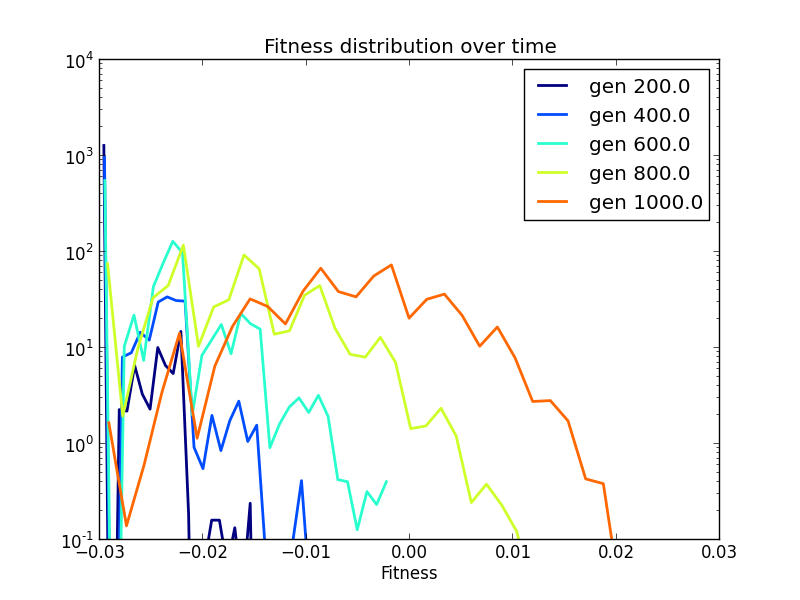

Populations with static, additive fitness landscapes evolve steadily towards the fitness maximum. This example shows this phenomenon using subclassing, which is a central concept in object-oriented programs. The code is located in fitness_wave.py.
As usual, we start by loading the required modules. Before starting the actual script, however, we prepare a new class, haploid_lowd_track. This is intended to be a low-dimensional population like haploid_lowd, but a beefed-up version of it that can also keep track of the fitness histogram over time and plot it. Such an extended variant of an existing class is called a subclass.
Defining our extended population amounts to the following pieces of code. First, we define the new class and state clearly that it will steal (or inherit) all the features of a normal haploid_lowd population:
class haploid_lowd_track(FFPopSim.haploid_lowd):
'''This class tracks the fitness distribution'''
Then, we tune the __init__ method, which is called when we initialize a new instance of a class:
def __init__(self, *args, **kwargs):
super(haploid_lowd_track, self).__init__(*args, **kwargs)
self.fitness_wave = []
We are just saying that we
- initialize the population normally, like the usual class haploid_lowd (or superclass) does, by calling the super line, and
- add an attribute called fitness_wave that will store the information about the fitness histograms.
In addition, we trick the evolve function a little bit, so that after each call it will store the fitness histogram in our attribute, fitness_wave:
def evolve(self, *args, **kwargs):
ret = super(haploid_lowd_track, self).evolve(*args, **kwargs)
self.fitness_wave.append((self.generation,
self.get_fitness_histogram(density=True,
n_sample=50000,
bins=30)))
return ret
Again, the super line calls the usual evolve function. After evolution has taken place, we store the current fitness histogram, and then return control to the user.
Note
if you are wondering what all those *args and **kwargs are, they are only a way to pass all possible argument of that function to the superclass function. It makes the subclass transparent; whatever arguments the original function wanted, they are still valid now, and the subclass does not mess around with them. This is a common technique when you are only modifying superclass functions a little bit.
Finally, we add a handy function that plots the fitness histograms accumulated up to that point:
def plot_tracks(self):
'''Plot the tracked histograms'''
l = len(self.fitness_wave)
colors = cm.jet([int(255.0 * i / l) for i in xrange(l)])
for i, (g, dist) in enumerate(self.fitness_wave):
x = dist[1]
x = 0.5 * (x[:-1] + x[1:])
y = dist[0] + 1e-5
plt.plot(x, y, c=colors[i], lw=2, label='gen '+str(g))
plt.xlabel('Fitness')
plt.legend(loc=1)
plt.yscale('log')
plt.ylim(1e-1)
plt.title('Fitness distribution over time')
plt.ion()
plt.show()
This whole subclass introduction might look a bit difficult at first, but that’s a normal and healthy reaction if you are not used to object-oriented programming. It is really only a way to keep some properties and functions related to the population in the class itself, instead that out there in the script.
Finally, we can write our script as usual. We define some parameters:
N = 500000 # Population size
L = 12 # number of loci
mu = 1e-5 # mutation rate
r = 0.01 # recombination rate
we set them in the newly created population (note that we call haploid_lowd_track to build the population this time!):
pop = haploid_lowd_track(L) # produce an instance of haploid_lowd with L loci
pop.carrying_capacity = N # set the steady-state population size
pop.set_recombination_rates(r, h.SINGLE_CROSSOVER) # assign the recombination rates
pop.set_mutation_rates(mu) # assign the mutation rate
we initialize the individuals and the fitness landscape:
# initialize the population with N/2 individuals with genotypes 0, that is ----
# and N/2 with the opposite genotype, that is ++++
pop.set_wildtype(N)
# set a fitness landscape
pop.set_fitness_additive(1e-3 * np.linspace(1, 4, L))
and we finally evolve it:
# Track 5 distributions, with 200 generations between each other
for i in xrange(5):
pop.evolve(200)
Note that we do not have to track the fitness histogram explicitely in the script, because our subclass is doing it internally in its tuned evolve method already. Furthermore, we can now exploit the plotting facilities of haploid_lowd_track:
# Plot the fitness wave
pop.plot_tracks()
and get the following image:
We can see that, as time goes by, the population is able to explore more and more beneficial regions of the fitness landscape, and that the nose of the fitness distribution advances at approximately constant speed, which makes it a travelling wave.
From the algorithmic point of view, we have seen that subclassing is an alternative style than scripting. Instead of keeping track of stuff explicitely in your main script, you do it internally by modifying some class functions or adding new ones altogether.